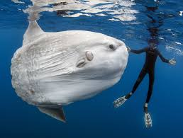
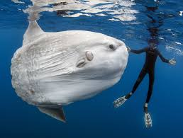
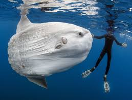
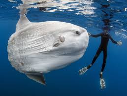

This page is dedicated to all of my favorite quirky animals I've seen through Youtube, Documentaries, or in real life. these animals are either arachnids/insects or aquatic in nature. Why? Because I find these to be the most interesting compared to any others in the animal kingdom. Use the bottom navigation list below to choose which animals you would like to learn more about.